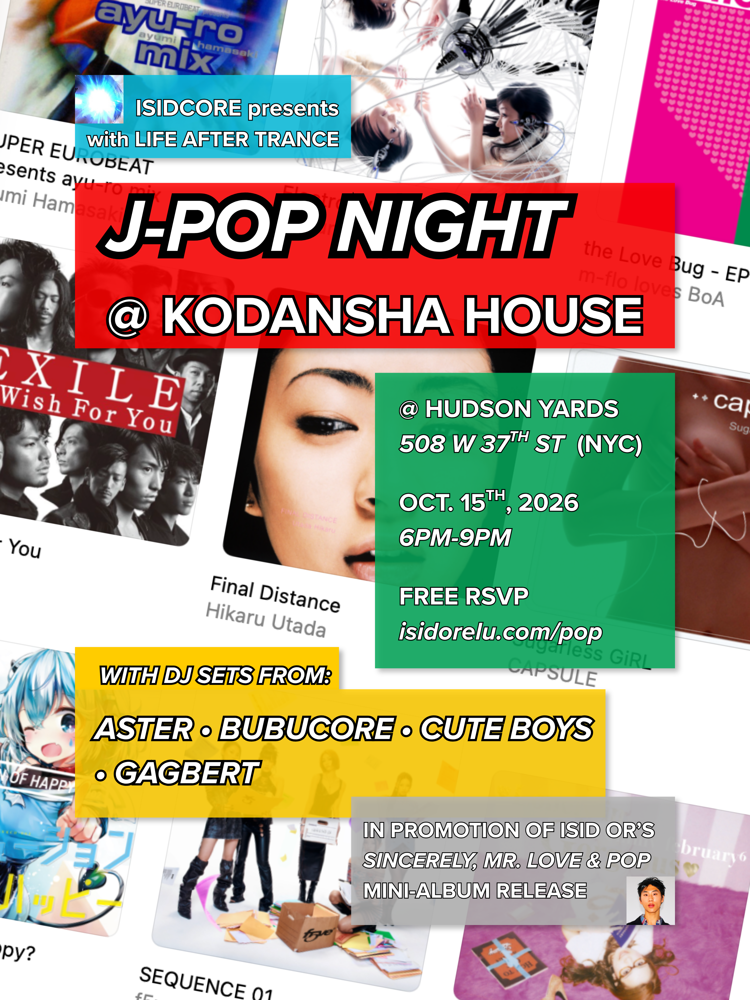

[Free RSVP]
An evening of J-pop, J-core, and anime openings throughout the years, featuring tracks by Hikaru Utada, Ayumi Hamasaki, Namie Amuro, Koda Kumi, Perfume + Capsule, Globe, Every Little Thing, BoA, T.M.Revolution, Ami Suzuki, m-flo, Crystal Kay, Tommy Febuary6 + Tommy Heavenly6, f5ve, and MORE!
DJ Lineup:
- Aster
- Bubucore
- Cute Boys
- Gagbert
Presented by Isidcore with Life After Trance, in promotion of isid or’s Sincerely, Mr. Love & Pop (Japanese Mini-Album) release. Hosted by isid or.